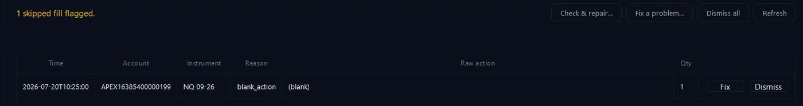
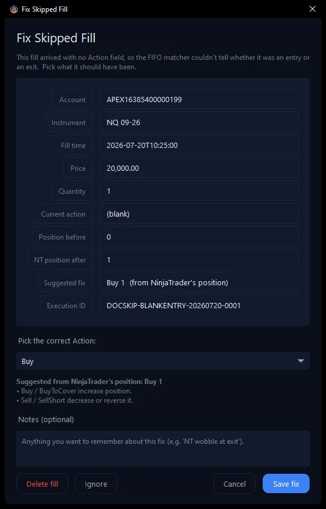
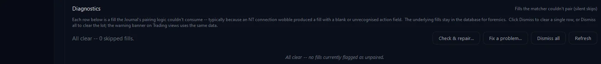

Every so often NinjaTrader hands the Bridge a fill it can’t make sense of — usually a brief connection wobble that leaves the fill with no Action (buy or sell). The Journal never throws it away; it sets it aside as a skipped fill and asks you to say what it should have been. This walkthrough fixes one on our funded account, APEX16385400000199.
What a skipped fill is A skipped fill is a real execution the Journal’s trade-pairing couldn’t use — typically because the Action field came through blank, so it can’t tell whether the fill opened or closed a position. The fill stays safely in the database; it just needs one small decision from you before it can join its trade.
Spotting it The Journal flags skipped fills in two places: an amber banner on the Trading view, and the Diagnostics card under Health & Support. Here one fill on APEX16385400000199 arrived with a blank action:
The Diagnostics card flags the fill — reason "blank_action", raw action blank — with a Fix button.
Fixing it 1. Click Fix on the flagged row (or the Fix a problem… button above the list). The Fix Skipped Fill window opens. It is reason-aware: because the action was blank, it asks what the fill should have been and even suggests the answer from NinjaTrader’s own position at the time — here, Buy 1.

The reason-aware Fix window — it explains the problem and pre-selects the suggested action.
2. Pick the correct Action (or accept the suggestion), add a note if it helps, and click Save fix. Three choices sit at the bottom: Save fix repairs the fill and immediately recalculates its commission from your cached rates; Delete fill removes it entirely; Ignore dismisses the flag without changing anything.
Done The fill is repaired, its trade now appears normally in the Trading journal, and the Diagnostics card goes quiet — 0 skipped fills:

